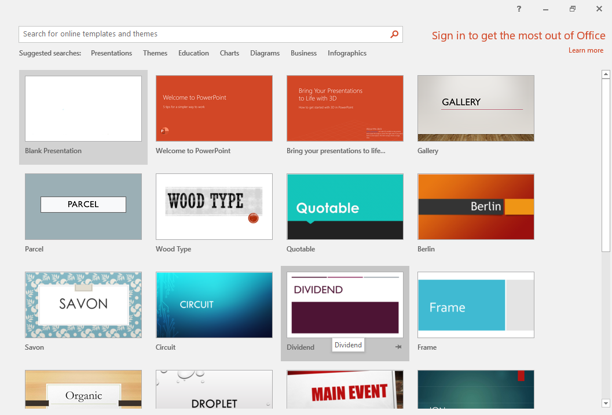
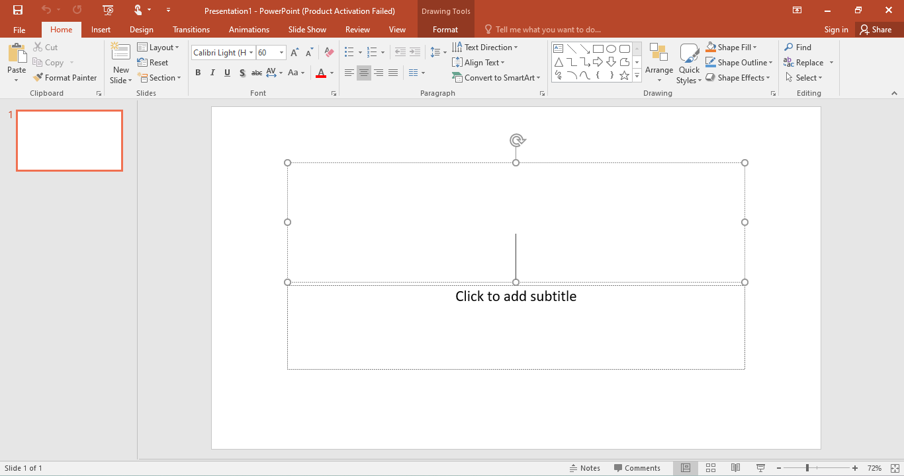
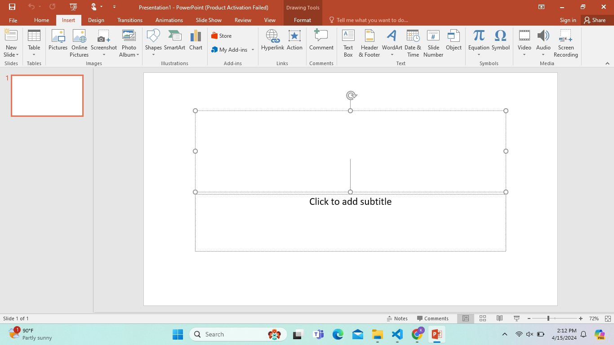
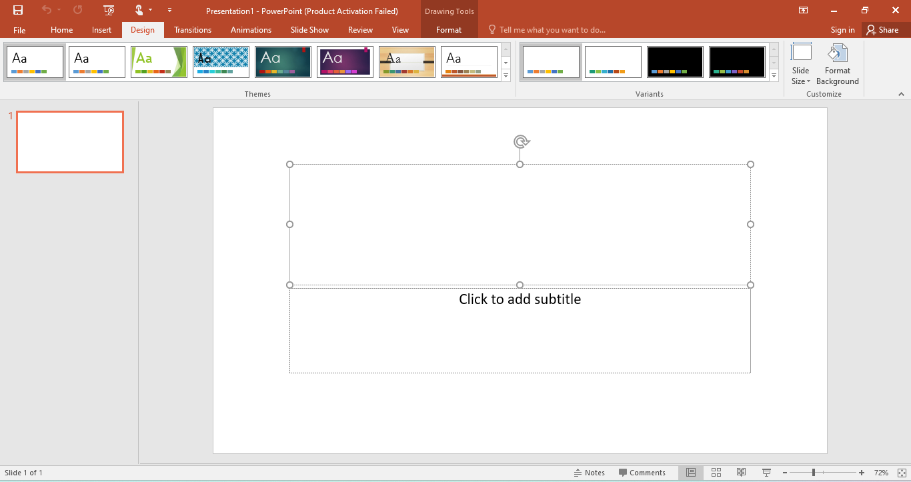
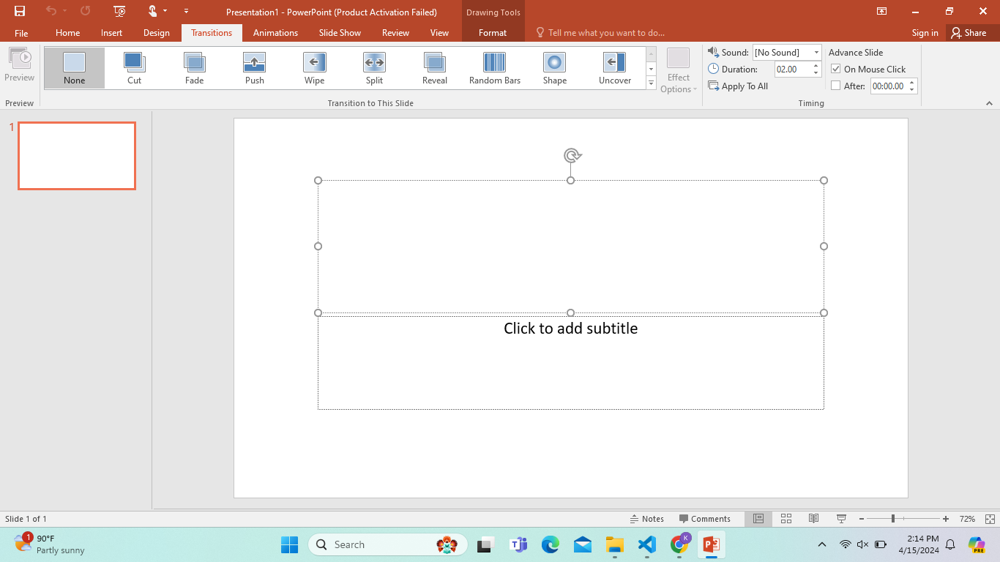
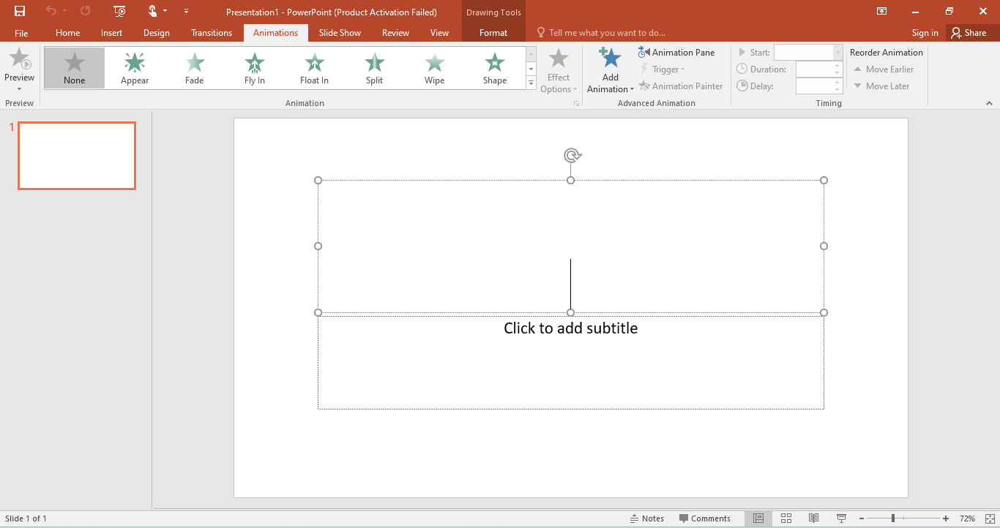
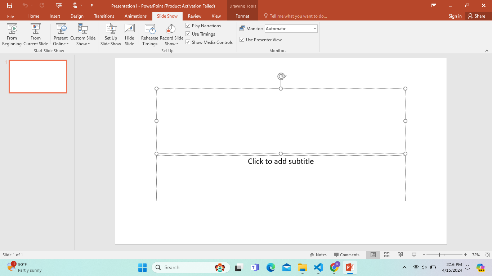

Learn Microsoft PowerPoint 2016
Master the art of creating engaging presentations using Microsoft PowerPoint. Follow these steps to explore the main features and design tools for building impactful slides.

Master the art of creating engaging presentations using Microsoft PowerPoint. Follow these steps to explore the main features and design tools for building impactful slides.
Start Microsoft PowerPoint and select a suitable theme for your presentation or choose “Blank Presentation” to begin from scratch.


Use the Home tab to adjust fonts, alignment, bullet points, and paragraph formatting to style your text easily.
Use the Insert tab to add tables, pictures, shapes, charts, SmartArt, and media files to enhance your slides.


Use the Design tab to apply themes, customize slide backgrounds, and adjust the slide size to make your presentation visually appealing.
Use the Transitions tab to add slide transition effects, control their timing, and smooth your presentation flow.


Add animations to individual objects, text, or images to make your slides more dynamic and interactive.
In the Slide Show tab, you can preview your presentation, set slide timings, record narrations, and rehearse your delivery.
